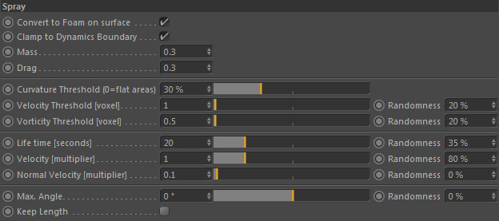
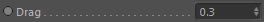
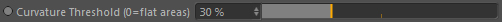
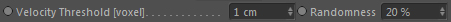
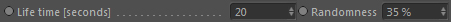
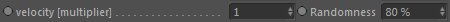
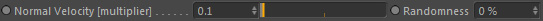

Spray

These settings define and control when and how spray particles are generated.
Convert to Foam on surface
If spray particles hit the liquid surface you can let them be converted into foam particles. Otherwise they will die.
Clamp to Dynamics Boundary
Clamps spray particle positions to the fluid dynamics container so they remain inside the fluid simulation space.
Mass

The initial mass of a spray particle when it is generated.
Drag

The initial drag of a spray particle when it is generated.
Curvature Threshold (0=flat areas)

Defines the surface curvature where spray particles are generated. Particles are only generated in areas with a curvature higher than this value.
Velocity Threshold [voxel]

Defines the fluid speed where spray particles are generated. Particles are only generated in areas with a velocity higher than this value.
Randomness
Randomizes the velocity threshold between 0.0 and 'Velocity Threshold'.
Vorticity Threshold [voxel]
(Only available in Geometry mode)
Defines the fluid vorticity where spray particles are generated. Particles are only generated in areas with a vorticity higher than this value.
Randomness
(Only available in Geometry mode)
Randomizes the vorticity threshold between 0.0 and 'Vorticity Threshold'.
Life time [seconds]

The life time of a spray particle given in seconds.
Randomness
Randomizes the Life time between 0.0 and 'Life Time'.
Velocity [multiplier]

A multiplier for the initial velocity of a generated spray particle. 100% means the original fluid velocity at the location where it was generated.
Randomness
Randomizes the Velocity (multiplier) between 0.0 and 'Velocity (multiplier)'.
Normal velocity [multiplier]

A multiplier for the velocity along the surface normal direction. 100% means the original normal direction at the location where it was generated.
Note: this normal velocity is added to the spray particle velocity.
Randomness
Randomizes the Normal velocity [multiplier] value between 0.0 and 'Normal velocity [multiplier]'.
Max. Angle
(Only available in Geometry mode)
Define the maximum spawning angle of spray particles.
Randomness
(Only available in Geometry mode)
Randomizes the Max. Angle value between 0° and 'Max. Angle'.
Keep Length
The final velocity of a spray particle is a combination out of the original velocity, the normal velocity and the Spreading angle velocity.
Activating this option will clamp the length of the resulting velocity to the original particle velocity.